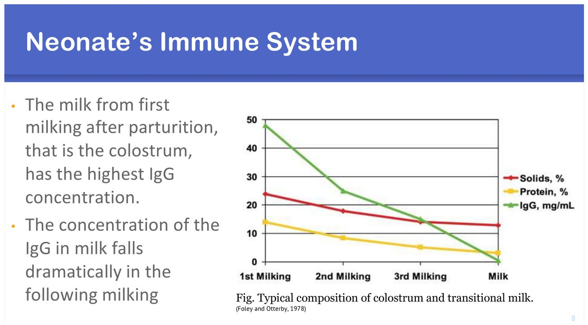
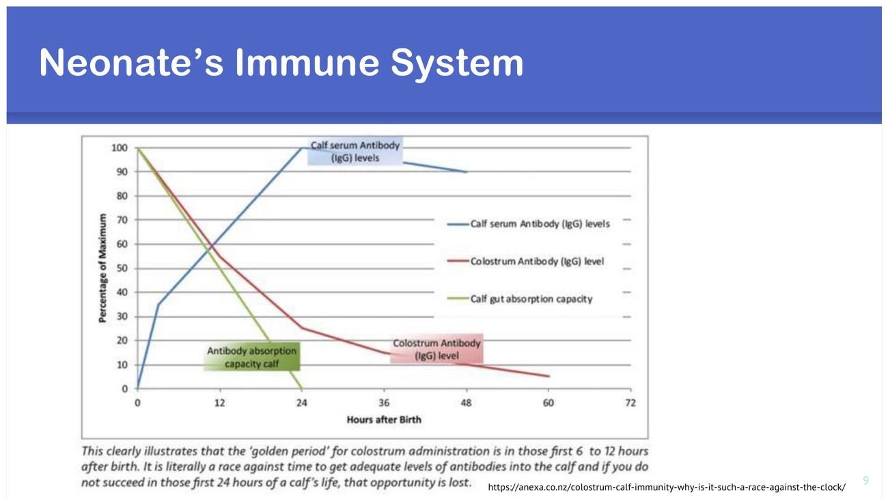
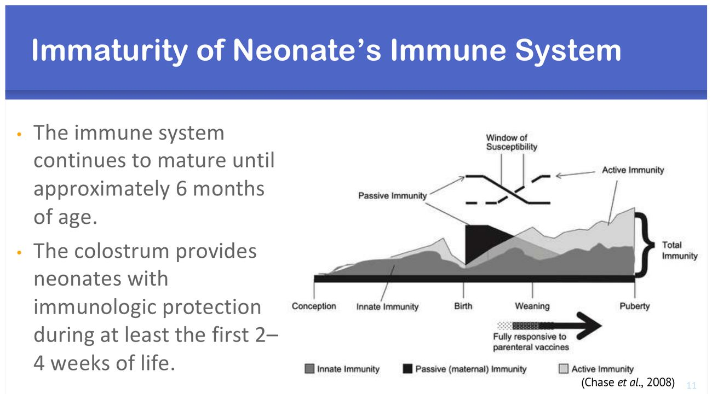

大方向與重點摘要
- 這章在講什麼
- 新生仔牛的三大塊：新生期管理（呼吸性與代謝性酸中毒、初乳管理）、新生期後的感染（腸道、呼吸道、臍帶與關節）、其他（皺胃症候群、先天缺陷）（p.3）。
- 為什麼重要
- 新生仔牛疾病與死亡是畜牧生產最主要的經濟損失之一；前 6 個月的發病與第一年的死亡中，約 66% 發生在出生後第一個月（p.2）。而且活下來的牛也會留下後遺症：長得慢、初產晚、乳量少。
- 這章要抓的重點
-
- 酸中毒：呼吸性（剛出生，窒息：難產、表面張力素不足 → CO₂ 蓄積）vs 代謝性（1–4 週以上，下痢流失 HCO₃⁻、乳酸蓄積、缺氧、厭食）。
- 新生兒免疫：牛是上皮絨毛膜胎盤（syndesmochorial），抗體過不去 → 出生無γ球蛋白血症 → 完全靠初乳；第一次擠乳的 IgG 最高；出生 48 小時內血清 IgG > 10 mg/mL ＝ 被動免疫良好。
- 初乳餵法：出生 4 小時內餵體重 7.5%（或至少 150 g IgG），12 小時內再補 5%（或 7.5%）；一次餵 10–12% 雖然足夠但仔牛會不舒服。
- 死因排名：腸道感染 > 呼吸道 > 臍帶與關節 > 皺胃與扭轉 > 先天缺陷；第一個月死因以慢性下痢（42.4%）最多。
- 腸道感染：發病率 20–40%、死亡率 5–10%；ETEC 約 3 日齡（白黃水樣、無血無黏液）、沙門氏菌 2–6 週（惡臭、黏液纖維素血）、隱孢子蟲 1–4 週。
- 下痢治療：中重度停乳 24 小時；口服 LR＋葡萄糖 50 g（至少兩次）；enrofloxacin 2.5 mg/kg IM sid 3 天；IV：LR 1,000 mL＋葡萄糖 50 g＋methionine 20 mL。
- 呼吸道感染：發病率 5–30%、死亡率 5–10%（佔離乳前死亡 20–25%）；Mannheimia haemolytica、Mycoplasma bovis、Pasteurella multocida；RSV、冠狀病毒、BoHV-1、PI-3、BVDV。
- 臍帶與關節感染：危險因子是助產、產房不衛生、FPT、臍帶照護不當；病原 E. coli、Trueperella pyogenes；後遺症含臍疝氣、敗血性多關節炎、肝膿瘍。
- 皺胃症候群：一次餵 > 3 L 或總固形物 > 15% → 皺胃排空延遲 → 發酵產氣；預防靠衛生、水溫、奶瓶餵讓食道溝閉合。
- 先天缺陷：腭裂（奶從鼻子流出、吸入性肺炎、腭成形術）；屈肌腱攣縮（中度：oxytetracycline 6–10 mg/kg 稀釋於生理食鹽水 IV＋夾板；重度：肌腱切斷術）。
- 容易混淆
- 呼吸性 vs 代謝性酸中毒：看日齡，剛出生是呼吸性（窒息），1–4 週以上的下痢牛是代謝性。三種下痢病原：用日齡先分（ETEC 3 天、隱孢子蟲 1–4 週、沙門氏菌 2–6 週），再看糞便（ETEC 無血無黏液、沙門氏菌惡臭有黏液纖維素血）。IgG 單位：講義文字寫 mg/dL，但同頁圖例是 mg/mL，被動免疫切點通常寫 10 mg/mL（即 10 g/L）。
- 考試可能怎麼問
（推測） - 第一個月佔死亡的比例；兩種酸中毒的原因與日齡；為什麼新生仔牛無γ球蛋白；初乳 IgG 變化；被動免疫切點；初乳餵量與時間；仔牛死因排名；腸道與呼吸道感染的發病率、死亡率、危險因子、病原；ETEC、沙門氏菌、隱孢子蟲的日齡與糞便；下痢處置；臍帶感染的危險因子與預防；皺胃症候群的誘因；腭裂與屈肌腱攣縮的治療。
內容以老師講義為主體。標示「補充」的段落（含「讀書補充Note」）是講義以外的延伸；標示「推測」的是依講義強調處推測的出題方向，不是考古題。考試範圍以老師上課為準。圖片為老師講義截圖。
難產 → 窒息 → 呼吸性酸中毒
初乳 7.5% BW
血清 IgG > 10 mg/mL？
下痢（代謝性酸中毒）、肺炎、臍帶炎
日增重↓、初產晚、乳量↓
腸道、呼吸道、臍帶關節感染的危險因子表裡都有 被動免疫轉移失敗（failure of passive transfer, FPT）：初乳管理是整份講義的核心。
新生仔牛的發病與死亡 Neonatal Morbidity & Mortality
先知道仔牛什麼時候死、死於什麼，才知道管理重點放在哪。
第一個月最關鍵（p.2）必考
- 新生仔牛疾病與死亡是畜牧生產主要的經濟損失。
- 前 6 個月的所有發病與第一年的所有死亡，約 66% 發生在第一個月。
講義的架構（p.3）看過
新生期管理
酸中毒、初乳管理
新生期後感染
腸道、呼吸道
其他
臍帶與關節、皺胃、先天缺陷
仔牛最常見的死因（p.16）必考
- 腸胃道感染（gastrointestinal infections）
- 呼吸道感染（respiratory infections）
- 臍帶與關節感染（umbilical/joint infections）
- 皺胃與扭轉疾病（abomasal/torsion disorders）
- 先天缺陷（congenital defects）
乳牛仔牛第一個月的主要死因（p.15）理解
| 死因 | 頭數 | % | 平均死亡日齡（± SD） |
|---|---|---|---|
| 慢性下痢 | 211 | 42.4 | 20.3 ± 5.6 |
| 急性下痢 | 126 | 25.3 | 10.8 ± 5.2 |
| 敗血症 | 54 | 10.8 | 7.7 ± 5.0（最早） |
| 惡病質／消耗症候群 | 27 | 5.4 | 25.0 ± 3.7（最晚） |
| 其他 | 80 | 16.1 | 17.5 ± 7.8 |
n = 498（Bednarski and Kupczynski, 2026）；各組死亡日齡差異顯著（Kruskal–Wallis，p < 0.001）。看點（補充）：下痢合計約 68%；敗血症最早死（約 1 週），慢性下痢與消耗症候群拖到 3 週以上。
酸中毒 Acidosis
兩種酸中毒用日齡分：剛出生是「肺沒打開」，幾週大是「拉肚子拉掉鹼」。
呼吸性 vs 代謝性（p.4–6）必考
| 呼吸性酸中毒 Respiratory | 代謝性酸中毒 Metabolic | |
|---|---|---|
| 日齡 | 新生期（剛出生） | 1–4 週以上 |
| 原因 | 窒息（asphyxia）、肺擴張不全（atelectasis）： • 難產造成 • 肺表面張力素不足 | • 下痢：HCO₃⁻ 流失；異常發酵 → 乳酸蓄積 • 缺氧：肝醣 → 乳酸 • 厭食：菌相失衡、異常發酵 |
| 機轉 | 血中 CO₂ 蓄積：CO₂ ＋ H₂O ⇌ H₂CO₃ ⇌ H⁺ ＋ HCO₃⁻（往右走，H⁺↑） | 鹼（HCO₃⁻）流失＋酸（乳酸）增加 |
症狀（p.7）必考
- 沉鬱、嗜睡（depressed, lethargy）
- 無法站立
- 反射消失（例如吸吮反射，補充）
- 四肢末端冰冷
- 昏迷
補充（臨床）：下痢仔牛的酸中毒程度不一定和脫水程度一致；有些仔牛脫水不嚴重，卻因為代謝性酸中毒而站不起來、吸吮反射消失，這時要補的是鹼（例如碳酸氫鈉），不只是水。講義的處置見第 7 節。
讀書補充Note - 子牛的出生、分娩三期與難產（季昭華老師 2022 共筆）
1. 新生子牛的處理
- 正常新生子牛：30 分鐘內沒站起來就要檢查（因為要吸奶）；4–5 小時可完全起立步行。
- 臍帶 10–15 cm 等它自然斷（手拔會出血），止血於根部 5 cm 處結紮。
- 口鼻黏液：倒吊讓液體流出，或用乾淨的布刺激口腔舌根讓小牛開始呼吸。
- 假死（沒呼吸或呼吸困難）：用呼吸器或口吹氣，或讓小牛正躺抬放前肢，但效果不好。
2. 分娩三期
| 第一期 | 第二期 | 第三期 | |
|---|---|---|---|
| 內容 | 子宮頸鬆弛擴張、胎胞形成 | 胎兒娩出 | 胎盤剝離 |
| 陣痛 | 15–30 秒，每 15 分鐘一次 | 15–30 分鐘，每 2–3 分鐘一次 | — |
| 破水 | 尿膜絨毛膜破裂（第一次破水）：淡綠帶黃褐 | 羊膜破裂（第二次破水）：淡黃 | — |
| 時間 | 通常 3–6 小時，女牛可達 24 小時 | 約 2–4 小時 | 約 8–12 小時 |
- 第一期胎兒還在調整姿勢，不可助產。
- 第二次破水後 4 小時未見分娩即為難產，要觸診確認胎位胎勢並助產。
- 分娩前 2–3 天把待產牛隔離到舒適環境。
3. 胎位
- 最標準：跳水式（前肢在前、頭放在前肢上）；尾位生產（後肢先出）屬可救活的正常姿勢但需助產。
- 需矯正的例子：後腿在骨盆腔的縱腹位（前腿保持牽引，後腿推回去）；前腿彎曲（將前腿向上提舉再往外拉）；頭頸彎曲（頭部和肩推回，再把頭擺正）；只摸得到小牛頸背部 → 立即剖腹產。
- 助產時臍帶可能斷裂 → 小牛反射性呼吸，若頭還在子宮內會吸入羊水造成吸入性肺炎，所以要盡快。
- 處置選項：矯正胎位、強力助產、碎胎術、剖腹產；要考量母牛未來生產價值、費用與預後。
連到本節：難產 → 窒息 → 呼吸性酸中毒。
新生兒免疫與初乳 Neonate's Immune System
仔牛一出生血中幾乎沒有抗體，初乳是唯一來源，而腸道吸收抗體的能力只維持很短的時間。
為什麼出生時沒有抗體（p.8）必考
- 新生仔牛無γ球蛋白血症（agammaglobulinaemia）。
- 牛的胎盤是上皮絨毛膜胎盤（syndesmochorial / synepitheliochorial placenta）：蛋白質（抗體）無法穿過。
- 母源抗體只能靠初乳（colostrum）。
※ 講義寫「syneitheliachorial placenta（結締組織絨毛膜胎盤）」；一般拼法為 synepitheliochorial（或傳統的 syndesmochorial，結締組織絨毛膜胎盤）。補充：犬貓是內皮絨毛膜胎盤，出生前可得到少量抗體；人是血絨毛膜胎盤，IgG 可通過。
初乳成分隨擠乳次數下降（p.9）必考
- 分娩後第一次擠出的乳（初乳）IgG 濃度最高。
- 之後幾次擠乳的 IgG 急劇下降。

吸收窗口很短（p.10）必考

初乳的 IgG 一次比一次少，仔牛腸道的吸收能力也一小時比一小時差（補充：腸道上皮「關閉」）。所以要第一次擠的初乳、出生後盡快餵。
被動免疫是否成功（p.11）必考
- 出生後 48 小時內仔牛血清 IgG > 10（見下方單位說明）＝被動免疫良好。
- NDHEP（1993）資料：IgG > 10 mg/mL 的仔牛，到 56 日齡的存活率明顯高於 < 10 mg/mL 的仔牛。
講義 p.11 文字寫「> 10 mg/dL」，但同頁圖例是「> 10 mg/mL」。一般被動免疫轉移成功的切點寫作 10 mg/mL（＝ 10 g/L）（補充），文字的 mg/dL 應是筆誤。考試若照講義原文出題，請注意老師上課的說法。
免疫系統的成熟（p.12）理解
- 免疫系統要到約 6 月齡才成熟。
- 初乳至少在出生後 2–4 週提供免疫保護。

補充：被動免疫下降、主動免疫還沒起來的「易感窗口」，正好對應下痢與肺炎好發的 1–6 週。
讀書補充Note - 初乳的另一種說法與發酵初乳（季昭華老師 2022 共筆）
1. 共筆記錄的初乳要點
- 初乳：分娩後 4–5 天（甚至一週內）分泌的乳；含豐富蛋白質、脂肪、維生素 A、D、E、球蛋白、白蛋白，所以不好喝。
- 子牛要在 24 小時內吸收初乳才有效；提供出生後 6–8 週的免疫力，之後由子牛自己產生。
- 初乳有緩瀉作用：促進腸道蠕動、排出胎便（胎兒吞入羊水形成的腸道廢物）；缺初乳 → 胎便硬化。
- 共筆另一處：分娩後 5–6 小時內給初乳；許凱程老師課的共筆：5 小時內 1.9 L，一日約體重 10–12%。
⚠ 與講義不同：本頁講義（Hsieh）寫「出生 4 小時內 7.5% BW、12 小時內再 5%」；共筆的數字略有不同，作答以出題老師的講義為準。
2. 和母牛分開的時機
- 直接移入哺育室人工餵奶，或與母牛同居半天到 3 天，最晚 4 天分開。
- 太晚分開 → 小牛習慣吸母牛乳頭，之後改用奶瓶較難。
3. 發酵初乳
- 是什麼（補充）：把多出來的初乳放著讓它自己發酵變酸（乳酸菌產生乳酸、pH 約降到 4–4.5），酸性環境讓壞菌不易生長，所以室溫就能保存比較久，是牧場簡單的保存法。
- 不適合拿來做的初乳：分娩時患乳房炎、產前乳房炎用過抗生素、乾乳期用乾乳用抗生素未超過 3 週以上、乾乳易凝固的乳（補充：抗生素殘留會抑制乳酸菌發酵，也不該餵給仔牛）。
- 保存：6 次哺乳的量，室溫存於清潔桶內，25°C 以下可保存 1 個月（有異味、發霉就丟掉，補充）。
- 給法：發酵初乳與水 2:1，一天 3.5–5.5 kg。
4. 發酵初乳是什麼、不是什麼（補充）
- 不是取代第一餐：講義寫出生 4 小時內要餵新鮮初乳（體重 7.5%）、12 小時內再補 5%。發酵初乳用在之後的餵食；共筆沒有寫開始的日齡，使用時機以老師上課為準。
- 發酵過程中抗體（IgG）大部分仍在，但被動免疫的主要時間窗是出生後前幾小時，所以重點仍是第一次新鮮初乳的量與時間。
- 容器一定要乾淨，髒了反而長壞菌。
5. 可能題型（推測）：什麼初乳不適合發酵；保存條件與期限（25°C 以下、1 個月）；餵法比例與量（初乳與水 2:1，一天 3.5–5.5 kg）；發酵初乳能不能取代出生 4 小時內的第一餐（不能）。
初乳餵飼 Colostrum Uptake
記兩個時間點、兩個百分比：4 小時內 7.5%、12 小時內再 5%。
達到最佳被動免疫的餵法（p.13）必考
| 時間 | 量 | 或 |
|---|---|---|
| 出生 4 小時內 | 體重的 7.5%（公升） | 初乳含至少 150 g IgG |
| 出生 12 小時內補強 | 體重的 5% | 或再 7.5% |
出生後第一餐一次餵體重 10–12% 的初乳 → 被動免疫足夠，但仔牛會有中度沉鬱與不適（p.13）。
40 kg 的仔牛：4 小時內 40 × 7.5% ＝ 3 L；12 小時內再 40 × 5% ＝ 2 L。若一次餵 10–12% 就是 4–4.8 L。
補充：仔牛不肯吸吮時可用食道餵管（tube feeding）確保量與時間；初乳品質可用比重計或 Brix 折射儀估計 IgG。注意皺胃症候群提到單次餵 > 3 L 液體會延遲皺胃排空——初生第一餐的初乳是例外的高量，之後的代乳要分次。
腸道感染 Gastrointestinal Infection
仔牛最主要的死因：先記發病率與死亡率，再用日齡與糞便分出三種代表病原。
概況（p.17–20）必考
| 項目 | 內容 |
|---|---|
| 表現 | 腸炎與敗血症；症狀為下痢 |
| 發病率、死亡率 | 發病率 20–40%；死亡率 5–10%（Mee, 2023） |
| 危險因子 | 被動免疫轉移失敗、營養水準低、乳或墊料被汙染、同時有呼吸道疾病 |
| 後遺症 | 死亡（營養不良、脫水、電解質失衡、酸中毒）；平均日增重下降；初產年齡延後；乳量較低 |
病原（p.21）必考
| 類別 | 病原 |
|---|---|
| 細菌 | Escherichia coli、Salmonella spp.、Klebsiella spp.、Clostridium spp. |
| 病毒 | 輪狀病毒、冠狀病毒、牛病毒性下痢病毒（BVDV）、腺病毒、疱疹病毒 |
| 寄生蟲 | 球蟲（Coccidia spp.）、隱孢子蟲（Cryptosporidium spp.）、其他寄生蟲 |
三種代表病原比較（p.22–25）必考
| 產腸毒素性大腸桿菌 ETEC | 沙門氏菌症 Salmonellosis | 隱孢子蟲症 Cryptosporidiosis | |
|---|---|---|---|
| 日齡 | 約 3 日齡 | 2–6 週 | 1–4 週 |
| 病原 | Enterotoxigenic E. coli | Salmonella Dublin、S. Typhimurium | Cryptosporidium spp. |
| 糞便 | 白到黃色水樣，無血、無黏液 | 惡臭，常含黏液、纖維素或血 | 白到黃色、有臭味，有時帶血 |
| 全身 | 快速脫水、躺臥、電解質失衡 | 快速脫水、電解質失衡、虛弱 | 沉鬱、厭食、脫水 |
| 機轉／續發 | 附著黏膜、在腸腔增殖；腸毒素刺激腸黏膜過度分泌液體；可續發細菌性關節炎、多發性漿膜炎、腦膜炎、腎盂腎炎 | 續發肺炎、關節炎、腦膜腦炎 | — |
依日齡排：ETEC 3 天 → 隱孢子蟲 1–4 週 → 沙門氏菌 2–6 週。ETEC 是「分泌性」下痢（毒素讓腸子「流水」，所以沒有血和黏液）；沙門氏菌會破壞黏膜，所以有黏液、纖維素、血（機轉推論）。
補充：隱孢子蟲（C. parvum）是人畜共通病原，照顧下痢仔牛的人要戴手套、洗手；沙門氏菌 Dublin 與 Typhimurium 也可感染人。
讀書補充Note - 季昭華老師的子牛下痢分類表（2022 共筆）
1. 營養性下痢：品質不良或受汙染的代用奶粉、牛奶加水稀釋、一次餵太多、餵冰冷的牛奶（腸蠕動過度）。
2. 感染性下痢的好發日齡（共筆版本）
| 病原 | 好發年齡 | 重點 |
|---|---|---|
| 產腸毒素性大腸桿菌（ETEC） | 1–4 日齡 | 分泌性下痢，常見於初乳不足；白、綠、黃色酸敗味水樣下痢到甚急性（4–12 小時死亡） |
| 腸道出血型大腸桿菌 | 6 週齡以上 | Shiga-like 毒素 → 腸毒血症與腸血管損傷；黏膜出血性下痢 |
| 沙門氏菌 | 2 週齡–2 月齡（> 10 日齡） | 環境中可存活數年；恢復牛可成帶菌者 → 隔離或淘汰；甚急性敗血 24–48 小時死、急性發燒惡臭水樣、慢性消瘦 |
| 腸毒血症（Clostridium perfringens，C 型最常見） | < 3 月齡（> 10 日齡，開始吃飼料） | 可溶性碳水化合物與蛋白質多；越壯的牛死越快（搶食吃得多）；虛弱、猝死，常無法治療 |
| 輪狀病毒 | 4–14 日齡 | 破壞絨毛上皮；最常引起仔牛下痢；初乳抗體提供 48–72 小時保護 |
| 冠狀病毒 | 1–3 週齡 | 也破壞結腸 → 結腸炎；下痢約一週；可有輕微間質性肺炎 |
| 隱孢子蟲 | 4 日齡–4 週齡 | 高發病率、低死亡率；下痢長達 7 天、常反覆；抗消毒劑，用肥皂熱水刷洗、保持乾燥與紫外線至少兩週 |
| 球蟲 | ≥ 3–4 週齡、斷乳仔牛 | 豌豆湯樣稀便、裡急後重、會陰汙染；口服抗球蟲劑加在飲水；癒後對同種球蟲有免疫 |
⚠ 與講義不同：日齡與本頁講義（ETEC 約 3 日齡、隱孢子蟲 1–4 週、沙門氏菌 2–6 週）及牛傳染病講義（隱孢子蟲 1–3 週、沙門氏菌 2–12 週）略有不同，以出題老師講義為準。
3. 共通管理：確保初乳量與品質、良好畜舍衛生、減少緊迫、隔離病牛（奶瓶分開）、母牛產仔前 6 週內接種疫苗；仔牛不可密飼、不同齡不混養、不要每年重複使用同一個仔牛場。
下痢的治療與管理 Treating & Management in GI Infection
治療目標是維持水分與能量平衡；講義給了具體的藥名、劑量與途徑。
講義處置（p.26）必考
| 項目 | 內容 | 途徑 |
|---|---|---|
| 停乳 | 中度至重度：停乳 24 小時 | — |
| 電解質與能量 | 乳酸林格氏液（LR）＋ 葡萄糖 50 g，至少兩次 | PO |
| 抗生素 | Enrofloxacin 2.5 mg/kg，sid，3 天 | IM |
| 靜脈輸液 | LR 1,000 mL ＋ 葡萄糖 50 g ＋ methionine 20 mL | IV |
- 停乳 24 小時：讓受損的腸道休息，避免未消化的乳在腸內發酵加重下痢（推論）；但要用電解質液補水與能量，不能只停不補。
- LR：補水與電解質；乳酸在肝臟代謝成 HCO₃⁻，可幫助矯正代謝性酸中毒（補充）。
- 葡萄糖：補能量；停乳期間仔牛沒有其他能量來源。
- Enrofloxacin：氟喹諾酮類，針對 E. coli、Salmonella 等革蘭氏陰性菌與敗血症（補充）。
- Methionine（20 mL，IV 輸液中）：講義沒有說明為什麼加。Methionine 是含硫胺基酸，體內用來合成半胱胺酸、牛磺酸與穀胱甘肽（glutathione）、SAMe，和肝臟解毒與抗氧化有關（教科書生化，補充）；可能的用意是輔助保肝、補充營養或臨床習慣（推測，沒有查到仔牛下痢的明確療效或劑量依據）。輸液的核心仍是水分、電解質、能量與酸鹼矯正；作答以老師上課說法為準。
Enrofloxacin 用在經濟動物要遵守當地法規與停藥期；美國禁止氟喹諾酮在食用動物仿單外使用（extra-label use）（補充）。抗生素對病毒（輪狀、冠狀）與隱孢子蟲無效，這類下痢的重點是輸液與酸鹼矯正（補充）。
劑量換算理解
40 kg 仔牛，enrofloxacin 2.5 mg/kg → 40 × 2.5 ＝ 100 mg；若用 5%（50 mg/mL）注射液 → 100 ÷ 50 ＝ 2 mL IM，每天一次、連續 3 天（濃度為假設，實際依產品）。
讀書補充Note - 仔牛下痢的輸液計算（季昭華老師 2022 共筆）
1. 脫水評估
| 脫水 % | 眼球凹陷 | 皮膚回彈 | 黏膜 | 需要的液體療法 |
|---|---|---|---|---|
| 0–4 | 沒有／輕微 | 1–4 秒 | 濕潤 | 不需要 |
| 5–8 | 眼球與眼窩輕微分離 | 5–10 秒 | 乾黏 | 口服液可能較有效 |
| ≥ 9 | 眼球與眼窩間有 1 cm 凹陷 | > 11 秒 | 乾黏～乾燥 | 需靜脈輸液 |
2. 輸液量與速度
- 缺水量 ＝ 體重 × 脫水 %，再加上維持量（共筆寫 4–6 mL/kg/hr）。
- 前 6 小時給一半，另一半在後續 12–24 小時給完。
- 建議最快速率 80 mL/kg/hr。
- 嚴重脫水有酸中毒時，靜注中加 HCO₃⁻。
- 輕度下痢且能飲水：用比小指細的軟管深入食道灌口服液。
3. 例題（自行計算）：40 kg 仔牛脫水 8% → 缺水量 40 × 0.08 ＝ 3.2 L；前 6 小時先給 1.6 L（6 小時內約 6.7 mL/kg/hr，遠低於 80 mL/kg/hr 上限），其餘加上維持量在 12–24 小時內給完。
3-1. 例題怎麼算（逐步，補充）
- 缺水量 ＝ 體重 × 脫水 %：40 kg × 0.08 ＝ 3.2 kg，把 1 kg 水當 1 L → 3.2 L。（脫水 8% ＝ 比正常少了體重的 8% 的水。）
- 前 6 小時給一半：3.2 L ÷ 2 ＝ 1.6 L。
- 換成 mL/kg/hr 才能和上限比較：1.6 L ＝ 1,600 mL；1,600 ÷ 6 小時 ≈ 267 mL/hr；267 ÷ 40 kg ≈ 6.7 mL/kg/hr，遠小於 80 mL/kg/hr（此仔牛的 80 mL/kg/hr ＝ 3.2 L/hr，是共筆說的「建議最快」速度）。
- 其餘怎麼給：剩下的 1.6 L 缺水量加上維持量（共筆寫 4–6 mL/kg/hr），在之後 12–24 小時內給完。例題只算缺水量，沒有把維持量算進去；示意：維持量以 5 mL/kg/hr 計 ＝ 40 × 5 ＝ 200 mL/hr。
- 脫水 8% 剛好落在「5–8%」的邊界，實際上要不要靜脈輸液要看臨床表現（眼球凹陷、皮膚回彈、黏膜）；劑量與維持量的數字是共筆寫的，作答以老師講義為準。
4. 恢復餵奶：電解質輸液使仔牛 1–2 天恢復吸乳能力，之後依體重 5% 供應牛奶或品質佳的代奶粉；依下痢程度 3–7 天後漸漸回到正常餵飼。必要時給抗生素、NSAIDs。
小羊下痢依 pH 與鹼缺乏分級的做法，見羊理學檢查頁的第二堂共筆。
呼吸道感染 Respiratory Infection
仔牛第二大死因；危險因子多在「養在哪、怎麼養」。
概況（p.27–28）必考
| 項目 | 內容 |
|---|---|
| 症狀 | 鼻分泌物、咳嗽、肺炎 |
| 發病率、死亡率 | 發病率 5–30%；死亡率 5–10%（佔離乳前死亡的 20–25%）（Mee, 2023） |
| 危險因子 | 被動免疫轉移失敗、密集飼養或不同年齡混養、環境與畜舍設計、共同感染或共病 |
| 後遺症 | 對之後的健康、生長、繁殖、壽命、乳量與存活都有負面影響 |
病原（p.29）必考
| 類別 | 病原 |
|---|---|
| 細菌 | Mannheimia haemolytica、Mycoplasma bovis、Pasteurella multocida |
| 病毒 | 呼吸道融合病毒（RSV）、冠狀病毒、牛疱疹病毒第 1 型（BoHV-1）、副流感病毒第 3 型（PI-3）、牛病毒性下痢病毒（BVDV） |
補充：常見模式是病毒（或緊迫）先破壞呼吸道防禦，細菌再續發造成肺炎；所以通風、避免混齡飼養、確保初乳，比事後用藥更重要。
臍帶與關節感染 Umbilical / Joint Infections
臍帶是新生仔牛直通體內的開口：感染可以只在局部，也可以跑到關節、肝臟、全身。
症狀（p.31）必考
- 臍帶腫脹、疼痛、熱、化膿分泌物或臍帶遲遲不乾。
- 潛在（occult）感染：外觀不明顯。
- 常同時有化膿性關節炎。
危險因子、後遺症、病原、預防（p.33–36）必考
危險因子
- 助產（assisted calving）
- 產房衛生差
- 被動免疫轉移失敗
- 臍帶照護不當
- 先天傾向
預防
- 在衛生的產房分娩並保持乾淨
- 盡快把仔牛移到乾淨的欄
- 臍帶照護並定期檢查，早期發現
- 良好的初乳餵飼管理
| 項目 | 內容 |
|---|---|
| 後遺症 | 臍疝氣、生長遲緩、下痢、敗血症、敗血性多關節炎、肝膿瘍、腹膜炎 |
| 環境病原 | E. coli、Trueperella pyogenes |
補充：常見做法是出生後立刻用消毒液（例如碘酊或 chlorhexidine）浸泡臍帶；肝膿瘍與腹膜炎的路徑是沿著臍靜脈（往肝臟）或臍動脈、臍尿管向腹腔內擴散。
皺胃症候群 Abomasal Syndrome
餵奶的方式不對，奶在皺胃裡發酵產氣，就會脹氣、潰瘍甚至扭轉。
定義（p.38）必考
- 與皺胃疾病相關的臨床症狀：皺胃炎、鼓脹（tympany）、潰瘍、扭轉。
- 可有或沒有下痢（Mee, 2023）。
誘發因素：管理（p.39）必考
高滲透壓（總固形物 > 15%）的液體
- 另兩個管理因素：衛生差、水溫不適當。
預防（p.40）必考
- 餵飼用具（機器、奶瓶、奶嘴、桶子）的衛生。
- 沖泡代乳品的水溫適當。
- 用奶瓶餵：讓食道溝（esophageal groove）形成，乳直接進皺胃。
補充：食道溝反射靠吸吮刺激；用桶子大口喝或灌食時食道溝不一定完全閉合，乳會漏進瘤胃發酵（瘤胃飲乳），造成瘤胃酸中毒與脹氣。
讀書補充Note - 子牛胃的發育、食道溝與離乳（季昭華老師 2022 共筆）
- 剛出生時瘤胃、蜂巢胃、重瓣胃未發育，只有皺胃體積較大。
- 食道溝反射：小牛含住乳頭加上吸吮動作、頭抬高時，食道溝閉合成管道 → 乳直通皺胃，不經過前胃（避免液體沖壞前胃菌叢）。
- 只給液狀飼料 → 瘤胃發育受限、發育不良、下痢；在飼料中加入乾草，瘤胃受物理（纖維）或化學刺激而發育較好；粉狀固形飼料（starter）可幫助過渡離乳期。
- 要給自由飲水：日本研究中有給水的小牛 4 週增重 8.45 kg、未給水只有 5.26 kg，且飼料攝取量也較多。小牛不會從水桶喝水，可用手指當奶嘴訓練。
- 離乳約在 8 週（最好一個半月以上讓瘤胃順利適應）；離乳後未能適應草料 → 緊迫、消化不良、下痢。
- 許凱程老師課的共筆：小牛用桶子低頭喝奶嗆到，奶跑到前三胃在未成熟的瘤胃發酵 → 瘤胃過酸（乳酸）與鼓脹；嚴重到末期毛會脫光、皮膚發紅。
先天缺陷 Congenital Defects
講義舉兩個例子：腭裂與屈肌腱攣縮，後者的治療分輕中重三級。
腭裂 Cleft palate（p.41）必考
- 懷孕期間口腔頂部（硬腭與／或軟腭）沒有完全閉合，口腔與鼻腔之間留下開口。
- 表現：乳從鼻子流出、生長差、體況差、吸入性肺炎。
- 治療：腭成形術（palatoplasty）。
屈肌腱攣縮 Flexural deformities（p.42–43）必考
- 部位：球節（掌指關節）或腕關節。
- 原因：負責屈曲肢體的肌腱比骨頭短。
| 程度 | 治療（講義） |
|---|---|
| 輕度 | 站立（藉體重伸展肌腱） |
| 中度 | Oxytetracycline 6–10 mg/kg，以生理食鹽水稀釋，IV；夾板與包紮；站立 |
| 重度 | 肌腱切斷術（tenotomy）；夾板與包紮；站立 |
這裡不是當抗生素用：高劑量 oxytetracycline 會與鈣結合，降低肌腱與肌肉收縮所需的游離鈣，使肌腱放鬆、較容易伸直。要稀釋後緩慢 IV，因為快速推注也可能造成急性低血鈣反應與虛脫（補充）。
劑量換算：40 kg 仔牛 × 6–10 mg/kg ＝ 240–400 mg。
讀書補充Note - 其他育成管理：去角、副乳頭、削蹄（季昭華老師 2022 共筆）
- 去角：在角芽長出前電燒；沒處理好之後會畸形；外科切除因角與頭骨相連可能大量出血。
- 副乳頭切除：長在乳頭旁，擠乳時有分泌物 → 細菌感染、乳房炎。
- 削蹄：天天泡在水泥上會侵蝕軟化；指甲斷裂可能感染；消毒很重要。
- 育成不良的四類原因：飼育環境、給予法與給予量、疾病障礙、遺傳；共筆提到補太多鈣粉與維生素 A、D 會堆積在腎臟，牛「腰不好」時表現沒力氣、趴臥。
鑑別比較 Comparison
把三大感染放在同一張表：發病率、死亡率、危險因子、病原。
腸道、呼吸道、臍帶感染必考
| 腸道 | 呼吸道 | 臍帶與關節 | |
|---|---|---|---|
| 發病率 | 20–40% | 5–30% | — |
| 死亡率 | 5–10% | 5–10%（離乳前死亡的 20–25%） | — |
| 共同危險因子 | 被動免疫轉移失敗（FPT） | ||
| 特有危險因子 | 營養水準低、乳或墊料汙染、合併呼吸道病 | 密集或混齡飼養、環境與畜舍設計、共同感染 | 助產、產房衛生、臍帶照護不當、先天傾向 |
| 代表病原 | ETEC、Salmonella、輪狀與冠狀病毒、隱孢子蟲 | M. haemolytica、M. bovis、P. multocida、RSV、BoHV-1、PI-3、BVDV | E. coli、T. pyogenes |
| 後遺症 | 死亡、日增重↓、初產晚、乳量↓ | 健康、生長、繁殖、壽命、乳量、存活↓ | 臍疝氣、敗血症、多關節炎、肝膿瘍、腹膜炎 |
依日齡想病理解
| 日齡 | 想到 |
|---|---|
| 出生當下 | 呼吸性酸中毒（難產、窒息）、先天缺陷 |
| 約 3 天 | ETEC |
| 約 1 週 | 敗血症（第一個月死因表平均 7.7 天） |
| 1–4 週 | 隱孢子蟲、代謝性酸中毒 |
| 2–6 週 | 沙門氏菌 |
考試方向（推測）
以下是依講義強調的內容推測的出題方向，不是考古題，考試範圍以老師上課為準。
| 可能考法 | 答題重點 |
|---|---|
| 第一個月的重要性 | 前 6 個月發病與第一年死亡約 66% 在第一個月 |
| 兩種酸中毒 | 呼吸性：新生、窒息（難產、表面張力素不足）、CO₂ 蓄積；代謝性：1–4 週以上、下痢 HCO₃⁻ 流失、乳酸、缺氧、厭食 |
| 酸中毒症狀 | 沉鬱、不能站、反射消失、四肢冰冷、昏迷 |
| 無γ球蛋白血症 | 上皮絨毛膜（結締組織絨毛膜）胎盤，蛋白質過不去；靠初乳 |
| 初乳與被動免疫 | 第一次擠乳 IgG 最高；48 小時內 IgG > 10 mg/mL；免疫約 6 月齡成熟；初乳保護至少 2–4 週 |
| 初乳餵法 | 4 小時內 7.5% BW（或 ≥ 150 g IgG）；12 小時內再 5%（或 7.5%）；一次 10–12% 足夠但不適 |
| 死因排名 | 腸道 > 呼吸道 > 臍帶關節 > 皺胃扭轉 > 先天缺陷 |
| 腸道感染 | 發病 20–40%、死亡 5–10%；危險因子；後遺症 |
| ETEC／沙門氏菌／隱孢子蟲 | 3 天、白黃無血；2–6 週、惡臭黏液纖維素血（Dublin、Typhimurium）；1–4 週、白黃有時帶血 |
| 下痢處置 | 停乳 24 小時；LR＋葡萄糖 50 g PO 至少兩次；enrofloxacin 2.5 mg/kg IM sid 3 天；IV LR 1,000 mL＋葡萄糖 50 g＋methionine 20 mL |
| 呼吸道感染 | 發病 5–30%、死亡 5–10%；細菌與病毒病原 |
| 臍帶感染 | 危險因子、預防、後遺症、E. coli 與 T. pyogenes |
| 皺胃症候群 | > 3 L、總固形物 > 15% → 排空延遲 → 產氣；衛生、水溫、奶瓶餵（食道溝） |
| 先天缺陷 | 腭裂（乳從鼻出、吸入性肺炎、腭成形術）；屈肌腱攣縮（站立、oxytetracycline 6–10 mg/kg 稀釋 IV、夾板、肌腱切斷） |
練習題 Practice Quiz
中度：oxytetracycline 6–10 mg/kg 以生理食鹽水稀釋後 IV，加夾板與包紮、讓牠站立（p.43）。45 × 8 ＝ 360 mg；360 ÷ 100 ＝ 3.6 mL，再稀釋於生理食鹽水中緩慢 IV（濃度為假設）。
(1) 代謝性酸中毒：下痢流失 HCO₃⁻、異常發酵與缺氧造成乳酸蓄積（p.6）；症狀符合沉鬱、不能站、反射消失、四肢冰冷（p.7）。
(2) 初乳太晚（超過 4 小時）且太少（1.5 L ≪ 7.5% BW ≈ 3 L）→ 很可能被動免疫轉移失敗，是腸道感染的危險因子（p.13、p.19）；助產也是臍帶感染的危險因子（p.33），要一併檢查臍帶與關節。
(3) 中重度停乳 24 小時；IV LR 1,000 mL＋葡萄糖 50 g＋methionine 20 mL；可站後口服 LR＋葡萄糖 50 g 至少兩次；enrofloxacin 2.5 mg/kg IM sid 3 天（p.26）。補充：嚴重代謝性酸中毒常需補碳酸氫鈉。
(4) 沙門氏菌症（S. Dublin、S. Typhimurium；2–6 週；可續發肺炎、關節炎、腦膜腦炎）（p.24）；人畜共通，注意防護（補充）。